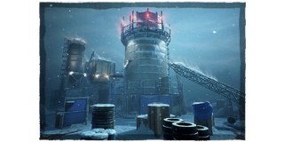
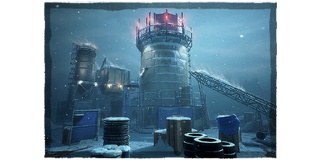

A propriedade Macmillan

Desmanche de veículos

Fazenda Coldwind

Ormond

Propriedade Yamaoka

Floresta Vermelha

A propriedade Macmillan


A Propriedade MacMillan é um dos primeiros reinos introduzidos em Dead by Daylight e carrega uma atmosfera sombria e industrial. Localizada em uma antiga área de mineração, o mapa traz fábricas abandonadas, trilhos de trem quebrados e estruturas de ferro deterioradas. O terreno é irregular, com visibilidade parcial entre estruturas e árvores.
Os edifícios centrais, como a fundição e o depósito, fornecem áreas de looping para sobreviventes experientes, mas também favorecem killers que usam pressão de mapa. A estética enferrujada e decadente reflete o passado sombrio de exploração trabalhista da família MacMillan, acrescentando uma camada de tensão narrativa a cada partida.
Desmanche de veículos


O Desmanche de Veículos é ambientado em um ferro-velho abandonado, onde carcaças de automóveis, pilhas de pneus e galpões enferrujados criam um ambiente desorganizado e imprevisível. O mapa é caracterizado por corredores estreitos formados por veículos empilhados e por áreas abertas onde a cobertura é limitada.
Com forte presença de elementos metálicos e óleo derramado, o mapa transmite uma sensação de degradação e perigo constante. Killers com mobilidade têm vantagem ao navegar entre os obstáculos, enquanto sobreviventes precisam usar as janelas e paletes estrategicamente para se manterem vivos.
Fazenda Coldwind


A Fazenda Coldwind é uma das regiões mais icônicas e aterrorizantes do jogo. Situada em uma propriedade agrícola abandonada, ela é cercada por milharais densos, celeiros e silos degradados. A visibilidade é comprometida pelas plantações altas, o que favorece emboscadas e aproximações furtivas, tanto para sobreviventes quanto para killers.
O lore por trás da fazenda envolve desaparecimentos misteriosos e práticas agrícolas suspeitas, criando um pano de fundo macabro. A variação de terrenos entre áreas abertas e construções cria um desafio tático constante para todos os jogadores.
Ormond
 

O mapa de Ormond é ambientado em um resort de esqui canadense abandonado e congelado no tempo. Coberto por neve e com visibilidade reduzida, o local mistura beleza natural com ruínas sinistras de prédios desativados. A cabana principal é um ponto de interesse estratégico, com várias rotas de fuga e esconderijos.
A ambientação gélida reflete o trauma e a frieza emocional do assassino Legion, com quem o mapa está associado. Em termos de jogabilidade, o terreno gelado pode parecer uniforme, mas os elementos de construção e encostas criam pontos de vantagem e armadilhas naturais.
Propriedade Yamaoka


Inspirada na cultura japonesa, a Propriedade Yamaoka combina beleza serena com terror sobrenatural. Com jardins zen, templos antigos e casas tradicionais, o mapa é o lar ancestral de assassinos como a Espírito (The Spirit) e o Oni.
O mapa equilibra áreas abertas com estruturas tradicionais que criam oportunidades tanto para looping quanto para surpresas. A estética envolta em névoa e a trilha sonora sutil tornam o ambiente especialmente tenso. Elementos culturais, como portões torii e árvores de cerejeira, contrastam com o terror presente, reforçando o desequilíbrio espiritual que domina a região.
Floresta Vermelha


A Floresta Vermelha é um reino de matas densas e natureza selvagem, marcada por duas grandes áreas: o Templo da Punição e a Cabana da Mãe Rússia. É um dos mapas mais variados visualmente, com ruínas antigas cobertas por musgo e uma arquitetura brutalista soviética no meio da floresta.
Cada variante do mapa oferece desafios únicos: o templo traz corredores labirínticos e áreas internas com múltiplos andares, enquanto a cabana mistura construções rústicas com a floresta aberta. O cenário reforça o sentimento de isolamento total, tornando o mapa excelente para emboscadas e perseguições prolongadas.